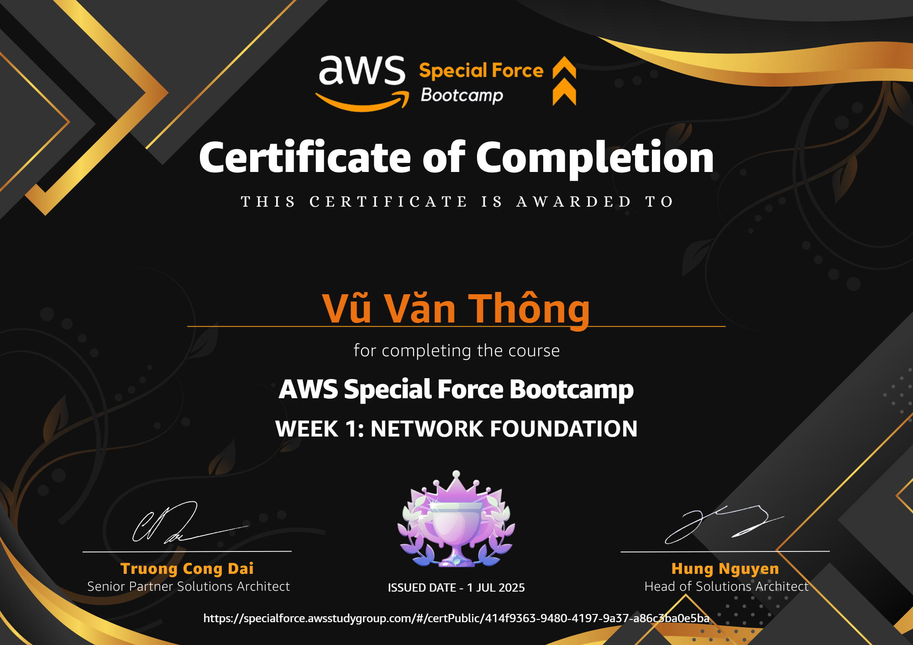

Chào các bạn! Mình là Vũ Văn Thông, sinh viên năm 3 ngành An toàn thông tin. Hôm nay mình muốn chia sẻ với các bạn về Network Foundation trên AWS – một chủ đề mình vừa hoàn thành trong Week 1. Bài viết này dành cho các bạn mới bước vào AWS Networking, muốn hiểu và áp dụng ngay được.

Tóm tắt nhanh (TL;DR)
Mình tóm gọn Week 1 vào 5 điểm chính:
- ✅ Hiểu hạ tầng AWS (Region/AZ/Edge) và cách nó ảnh hưởng latency & HA/DR
- ✅ Thiết kế VPC chuẩn: CIDR, subnet công khai/riêng tư, route table, IGW, NAT, SG, NACL
- ✅ Kết nối giữa VPC và hybrid: VPC Peering, Transit Gateway, VPN (IPsec), Direct Connect
- ✅ Tối ưu bảo mật – hiệu năng – chi phí; giám sát bằng CloudWatch/Flow Logs/CloudTrail
- ✅ Áp dụng IaC (CloudFormation/Terraform) để triển khai nhanh, chuẩn và ít lỗi
Course Content
1) Introduce to AWS
Hiểu mô hình shared responsibility và các lớp dịch vụ cơ bản (compute, storage, network). Đây là bức tranh tổng thể để biết "đặt" thành phần nào vào đâu.
2) AWS Global Infrastructure
Region / Availability Zone (AZ) / Edge location. Lựa chọn khu vực gần người dùng để giảm độ trễ (latency).
3) Cost Management & Optimization
Nắm pricing cơ bản và các "điểm ăn tiền": data transfer, NAT, CloudFront, Direct Connect. Tư duy thiết kế để đạt SLO mà vẫn không "đốt tiền".
4) Region & Availability Zones (AZs)
High Availability (HA) với Multi-AZ. Disaster Recovery (DR) với Multi-Region (replication/backup/failover).
5) VPC Overview
CIDR, Subnet, Route Table, Internet Gateway (IGW), NAT Gateway, Security Group (SG), Network ACL (NACL), VPC Endpoint. Nguyên tắc: public = điểm vào, private = app/data.
6) Multi VPC Network
VPC Peering (đơn giản, point-to-point, không chuyển tiếp). Transit Gateway (hub-and-spoke, nhiều VPC/tài khoản/region). VPN (IPsec) & Direct Connect cho kết nối hybrid.
What you'll learn (và vì sao quan trọng)
Enhanced Security & Compliance
VPC + SG (stateful) + NACL (stateless) đúng vai trò. Private subnet + NAT (outbound an toàn), Endpoint/PrivateLink truy cập dịch vụ AWS nội bộ. Bật VPC Flow Logs & CloudTrail để giám sát/kiểm toán.
High Availability & Resilience
Multi-AZ chống lỗi cấp AZ; Multi-Region cho DR cấp vùng. Route 53 + health checks + failover policy: DNS tự chuyển hướng khi sự cố.
Scalability & Flexibility
Quy hoạch CIDR rộng (thường 10.0.0.0/8) để dễ subnet/mở rộng. Chọn Transit Gateway hoặc VPC Peering theo quy mô.
Performance Optimization
Latency-based routing (Route 53) + CloudFront cache gần người dùng. Chọn Region/AZ gần nhóm người dùng; tối ưu đường đi qua TGW.
Cost Efficiency
Dùng NAT Gateway đúng chỗ (gom lưu lượng, giảm số lượng nhưng vẫn HA). PrivateLink/Endpoints giảm egress cost; multi-region có chủ đích để cân bằng SLO & chi phí.
Simplified Network Management & Monitoring
Chuẩn hóa route table/SG/NACL, gắn tags để vận hành. CloudWatch + VPC Flow Logs + alarms: soi đường đi gói tin, bắt lỗi nhanh.
Business Continuity & DR
Cross-Region replicas, backup/restore rõ RTO/RPO. Route 53 failover chuyển lưu lượng sang site dự phòng trong vài chục giây.
Integration with Other AWS Services
Phối hợp ALB/NLB, RDS/Aurora, S3/PrivateLink, EKS/ECS, Global Accelerator khi cần.
Infrastructure as Code (IaC) & Automation
CloudFormation/Terraform hóa VPC/subnet/route/SG… (repeatable & reviewable). CI/CD pipelines để kiểm thử & triển khai "không lỗi tay".
Future-Proofing & Innovation
Sẵn sàng IPv6, BYOIP, hybrid với Direct Connect/VPN; dễ mở rộng đa khu vực/đa đám mây.
Requirements (môi trường/lab nên có)
🌐 VPC Setup
Chọn CIDR RFC1918 (10/8, 172.16/12, 192.168/16); tách public/private subnets theo AZ
🔌 Internet Access
IGW cho public; NAT Gateway cho private (outbound-only)
🔒 Secure Access
Security Groups "ít quyền nhất"; Site-to-Site VPN (IPsec) / Direct Connect cho hybrid
🛣️ Routing
Route table rõ ràng; TGW/VPC Peering cho VPC-to-VPC
🌍 DNS
Route 53 (simple/weighted/latency/geolocation/failover) + health checks
⚡ High Availability
Multi-AZ/Region, DX dự phòng đa địa điểm, Route 53 failover
📊 Monitoring
CloudWatch, VPC Flow Logs, CloudTrail, cảnh báo bất thường
🔐 Security
Mã hóa, IAM least-privilege, SG/NACL đúng lớp
🏗️ IaC
CloudFormation/Terraform + code review/policy checks
💰 Cost Management
Theo dõi NAT/DX/data transfer, bật Cost Explorer & Budgets
Ghi nhớ 30 giây (Cheat Sheet)
Kiến trúc mẫu mình build trong lab
User ──DNS(Request)──► Route 53 (Latency/Failover)
│
└──► CloudFront (Cache)
│
ALB (public)
│
┌─────────┴─────────┐
│ │
EC2/EKS (private) EC2/EKS (private)
│ │
RDS (Multi-AZ) Redis/MQ
│
VPC Endpoints (S3, STS, Logs...)
│
NAT GW (private → Internet)
│
Site-to-Site VPN / Direct Connect
│
On-Prem Network
Tư duy chính: public chỉ chứa entry points (ALB/IGW), còn app/database ở private; outbound ra Internet đi NAT, kết nối hybrid dùng VPN/DX, nhiều VPC gắn vào Transit Gateway.
Quick Quiz – Luyện tập
Q1: Kết nối an toàn on-prem ↔ VPC qua Internet?
A. Direct Connect · B. Internet Gateway · C. Site-to-Site VPN · D. Client VPN
Q2: Subnet nào cho EC2 truy cập Internet trực tiếp?
A. Public · B. Private · C. Isolated · D. VPN
Q3: Giao tiếp giữa VPC khác account/region?
A. Transit Gateway · B. VPC Peering · C. Direct Connect · D. NAT GW
Q4: NAT Gateway dùng để…
A. Inbound+Outbound · B. Outbound only cho private · C. Route nội bộ · D. Nối nhiều VPC
Q5: DNS failover + định tuyến địa lý?
A. CloudFront · B. Route 53 · C. ELB · D. VPC Peering
Q6: HA toàn cầu tốt nhất?
A. Single-AZ · B. Multi-AZ & Multi-Region · C. Chỉ public subnet · D. DX một region
Q7: AWS Client VPN hỗ trợ giao thức?
A. HTTP · B. TCP hoặc UDP · C. SMTP · D. FTP
Q8: Security Group áp dụng cấp nào?
A. Subnet · B. VPC · C. Instance/ENI · D. Region
Q9: SG vs NACL khác nhau chính?
A. SG stateful, NACL stateless · B. Ngược lại · C. Cả hai stateless · D. Cả hai stateful
Q10: Transit Gateway làm gì?
A. Kết nối nhiều VPC (hub) · B. Route DNS · C. Nối on-prem duy nhất · D. Internet access
Q11: Phân phối nội dung cache toàn cầu?
A. Route 53 · B. Direct Connect · C. CloudFront · D. TGW
Q12: Kết nối dedicated on-prem ↔ AWS?
A. VPN · B. Peering · C. Direct Connect · D. NAT GW
Q13: Route 53 hỗ trợ HA bằng…
A. CloudFront cache · B. Round-robin · C. Nhiều routing policy + health check · D. ELB
Q14: Giảm latency triển khai toàn cầu?
A. Một region · B. Kiến trúc multi-region · C. Chỉ private subnet · D. DX một region
Q15: VPC Flow Logs dùng để…
A. Monitor API · B. Ghi lưu lượng mạng để phân tích · C. Quản lý NACL · D. Điều khiển routing
Q16: Giao thức Site-to-Site VPN?
A. HTTPS · B. IPsec · C. FTP · D. RDP
Q17: Dự phòng Direct Connect đạt được bằng…
A. Một kết nối/region · B. Nhiều VPN · C. Kết nối dự phòng ở nhiều địa điểm · D. Route 53
Q18: Route 53 policy định tuyến theo độ trễ?
A. Simple · B. Weighted · C. Geolocation · D. Latency
Q19: Truy cập on-prem đến private resources trong VPC?
A. Client VPN · B. CloudFront · C. Direct Connect · D. IGW
Q20: CIDR linh hoạt nhất cho VPC lớn?
A. 192.168.0.0/16 · B. 10.0.0.0/8 · C. 172.31.0.0/16 · D. 198.51.100.0/24
Kết luận
Tuần 1 giúp dựng nền tảng vững cho mọi bài toán cloud: đúng kiến trúc, đúng bảo mật, đúng chi phí. Nếu bạn muốn, mình có thể soạn bản PDF/cheat-sheet hoặc mẫu Terraform (VPC 2 AZ + NAT + Endpoint) để bạn thực hành ngay.
👉 Hành động tiếp theo:
Thực hành ngay với lab của mình! Mình sẽ chia sẻ các bài viết tiếp theo về các chủ đề nâng cao hơn.